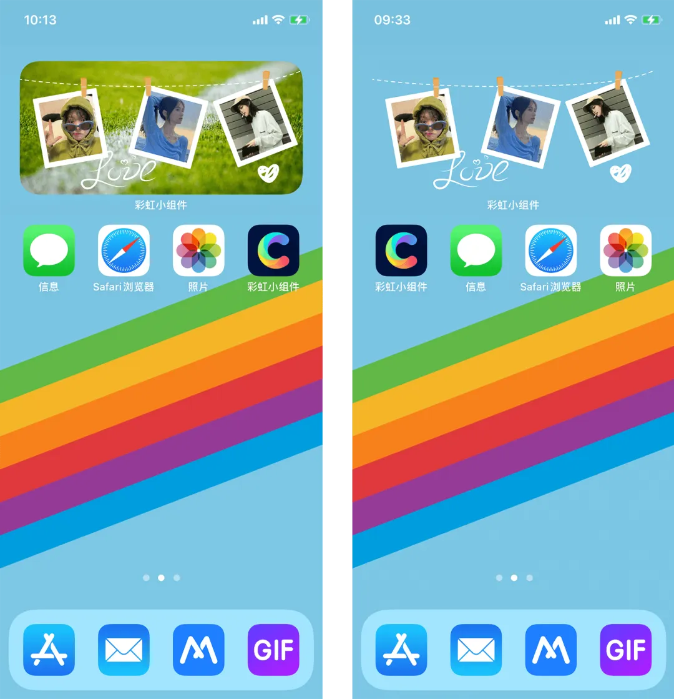
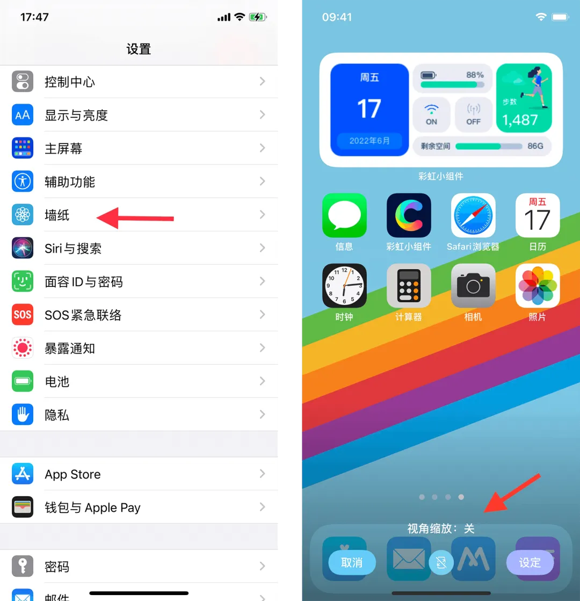
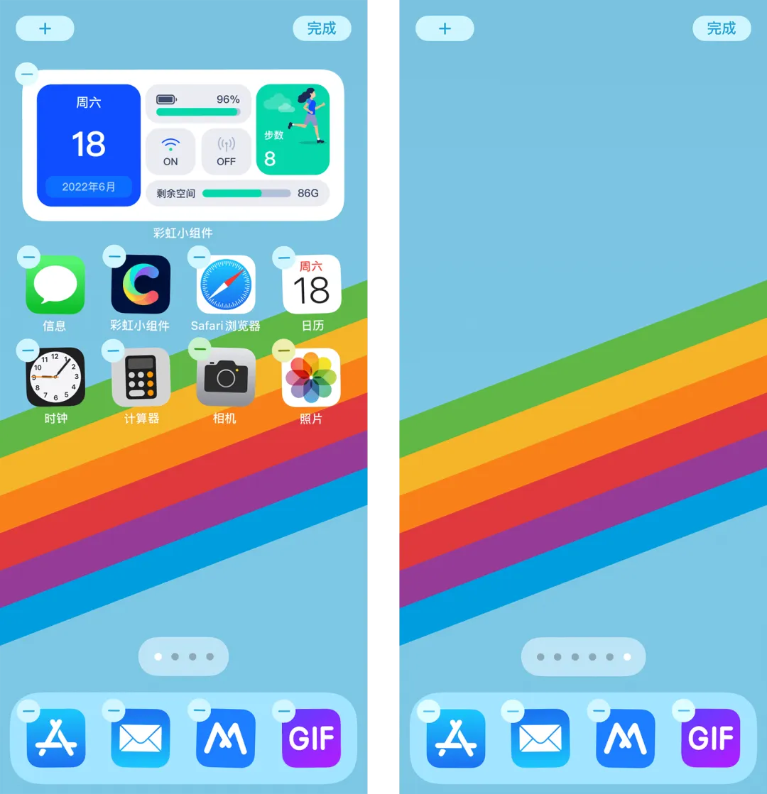
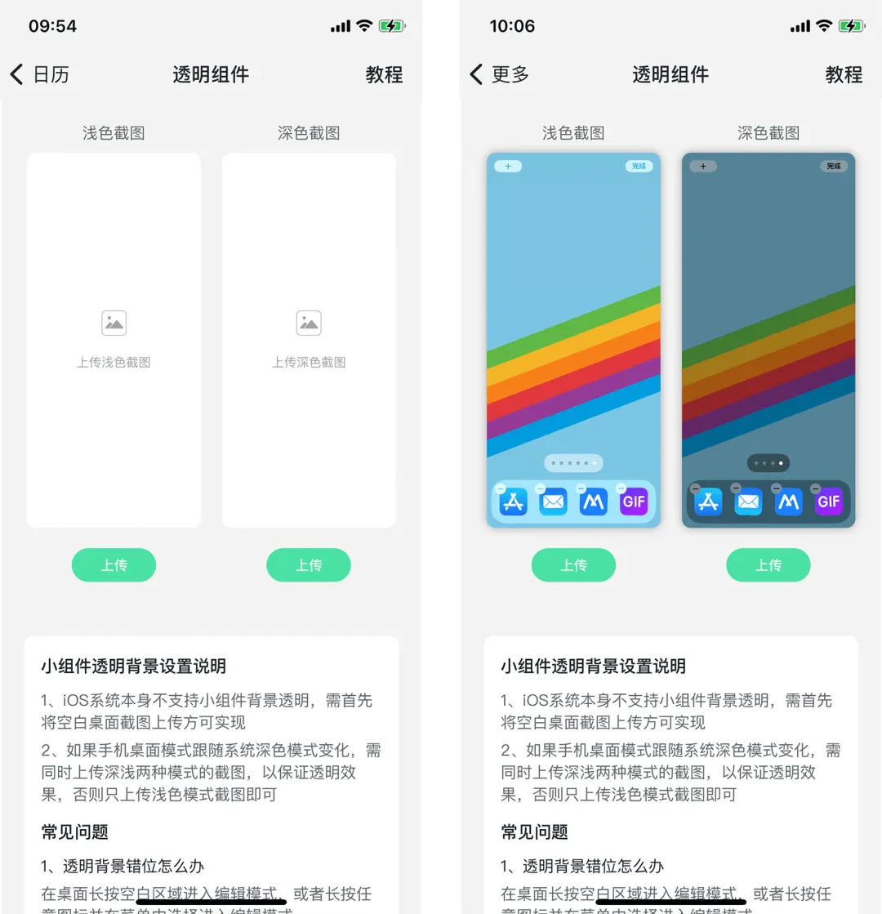
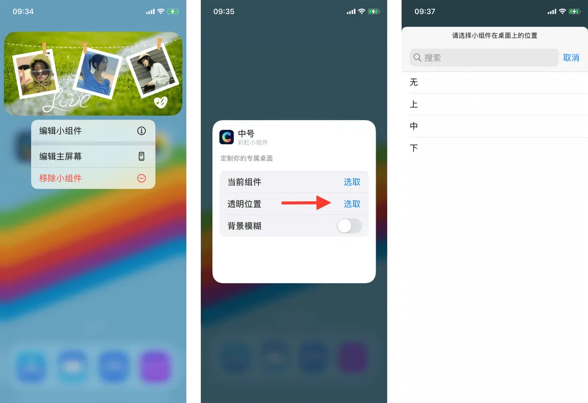
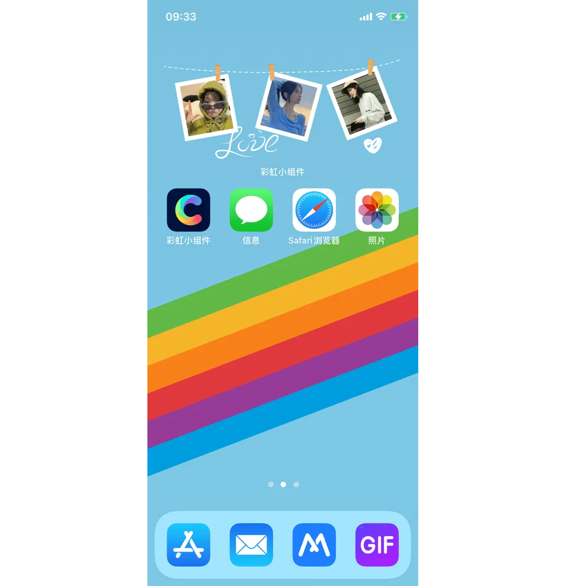

透明小组件效果对比
小组件本身不支持透明背景，它的实现原理是小组件背景和手机桌面背景相同，来达到透明效果。
关闭视角缩放
进入手机系统的【设置】-【墙纸】，选择【主屏幕预览图】-【关闭视角缩放】- 点击【设定】
截取空白桌面
长按桌面进入编辑模式，左滑至没有图标的空白桌面截屏，不可以用壁纸哦！
上传空白桌面截屏
点击上传按钮上传屏幕截图。
如果手机桌面壁纸跟随系统深浅模式变化，需要同时上传深浅模式的空白截图，以保证透明效果。
选择透明小组件的位置
长按小组件进入编辑模式，点击【编辑小组件】，然后点击透明位置右侧的【选取】，选择小组件对应的位置
设置成功
如果手机桌面壁纸跟随系统深浅模式变化，需要同时上传深浅模式的空白截图，以保证透明效果。